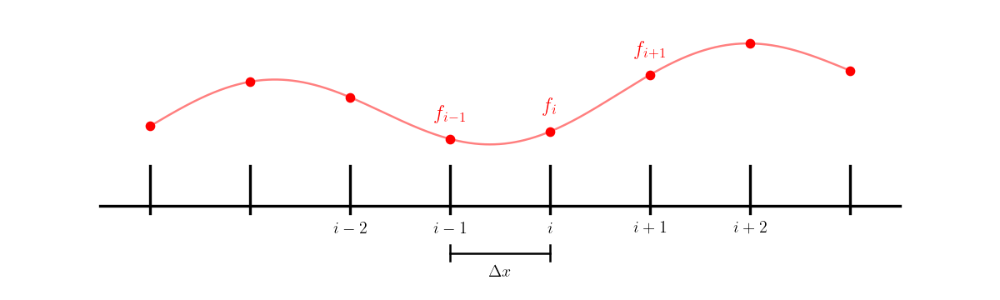
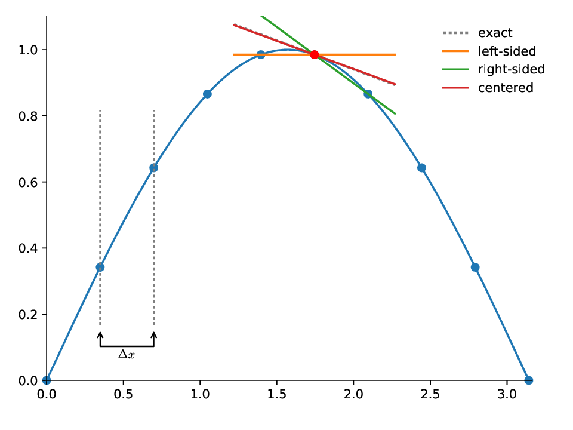

Differentiation
Contents
import numpy as np
Differentiation#
There are two situations where we can imagine needing to compute a derivative:
We have an analytic function, \(f(x)\), and we want to create a numerical approximation to its derivative
We have a function \(f(x)\) defined only at a finite set of (possibly regularly spaced) points, and we want to use that discrete data to estimate the derivative
For the first case, it is usually best to take the analytic derivative. In the previous notebook however, we did look at the effect of roundoff on computing a derivative.
We’ll focus on the second case here.
First order approximations#
Consider a set of points labeled with an index \(i\), with the physical spacing between them denoted \(\Delta x\).

We’ll label the function value at \(x_i\) as \(f_i\), e.g., \(f_i = f(x_i)\).
We can use the result of the Taylor expansion we previously derived to write the derivative as:
where \(f_{i+1} = f(x_{i+1})\) is the data we have at the point \(i+1\).
As \(\Delta x \rightarrow 0\), this approaches the definition of the derivative from calculus. However, we are not free to choose \(\Delta x\)—it is a property of the discrete set of points we are given.
Note: we could alternately have used the point to the right of \(i\):
Second order approximation#
Looking at the Taylor expansion of \(f_{i+1} = f(x_{i+1}) = f(x_i + \Delta x)\), we see
likewise:
subtracting these two expressions give:
or
This is called the centered-difference approximation to the first derivative. It is second order accurate.
Graphically, these different approximations appear as: 
Exercise:
Consider the function \(f(x) = \sin(x)\). The code below defines 10 equally spaced points and defines \(f(x)\) at each point.
Use this discrete data to estimate the derivative at x[3] and compute the error with respect to the analytic value.
x = np.linspace(0, np.pi, 10, endpoint=False)
f = np.sin(x)
# first we'll write functions to evaluate each of the derivative approximations
# at a given index idx
def left_sided_deriv(x, f, idx):
"""return the left-sided derivative at x[idx]"""
return (f[idx] - f[idx-1]) / (x[idx] - x[idx-1])
def right_sided_deriv(x, f, idx):
"""return the right-sided derivative at x[idx]"""
return (f[idx+1] - f[idx]) / (x[idx+1] - x[idx])
def centered_deriv(x, f, idx):
"""return the left-sided derivative at x[idx]"""
return (f[idx+1] - f[idx-1]) / (x[idx+1] - x[idx-1])
# always use x[ival] for the location of the derivative
ival = 3
dl = left_sided_deriv(x, f, ival)
dr = right_sided_deriv(x, f, ival)
dc = centered_deriv(x, f, ival)
print(f"left = {dl}, right = {dr}, centered = {dc}")
print(f"analytic value = {np.cos(x[ival])}")
left = 0.7042025064251417, right = 0.45212584056020877, centered = 0.5781641734926752
analytic value = 0.5877852522924731